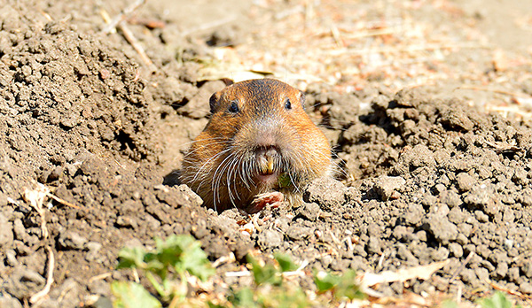
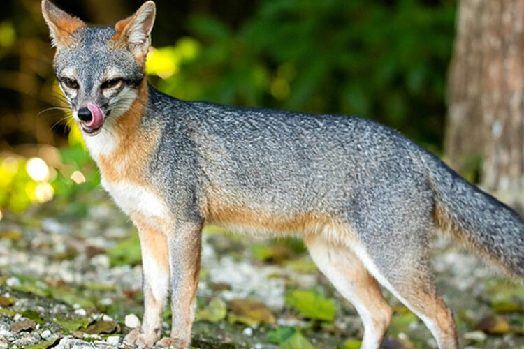

Botta's Pocket Gopher
Thomomys bottae

Water
Like kangaroo rats, pocket gophers are amazingly well adapted to
living with little water. Their kidneys are phenomenally efficient
and they are able to get all of the water they need from the foods
that they eat.
Food
Pocket gophers are herbivores, they forage for items like seeds,
forbes, grasses and fruits. Pocket gophers have external cheek
pouches where they can store food as they forage. This allows them
to forage more effectively, spending less time above ground where
they may run into predators.
Shelter
Pocket gophers live in underground burrows. Their burrows can be
complex systems of tunnels and chambers. Gophers are often seen by
cattle ranchers and farmers are nuisance animals because of their
ability to tunnel and burrow in all types of terrain. Their large
ever growing teeth allow them to chew through roots and clumps of
dirt underground. Their lips close behind their front teeth so
they don't consume any foreign materials while burrowing. Again,
like the kangaroo rat, they store food in caches in their burrow
systems. The underground burrows also provide a temperature break
from extreme cold and hot temperatures.
Gray Fox
Urocyon cinereoargenteus

Water
Gray fox are phenomenal at adapting to their environment. Their
ability to live in and around human settlements means that they do
well in environments that would seem unfriendly to other animals.
They can get the majority of the water that they need from the
food that they eat, but will drink water from any source they can
find, including bird baths, outdoor pet bowls and fountains!
Food
Gray fox are omnivores; they eat both meat items and plant items.
In the wild their diets often change depending on the season. In
spring/summer/fall when wildlife is plentiful, their diets may
consist of lizards, birds, eggs, small mammals, fruits and seeds.
In the winter when food is more scarce, they will still consume
small mammals and birds, but also the seeds from mesquite trees
and other dried vegetation.
Shelter
Like all of the other mammals we have looked at thus far, gray fox
like to live in some type of burrow. Theirs may be more like a
burrow in amongst bushes or in a rocky crevice/cave. They are
efficient diggers, but will take advantage of abandoned dens or
take over a system of burrows of an animal they have predated on.
Due to their ability to co-exist in human spaces, burrows will
also often be made in abandoned human spaces like sheds or wood
piles.